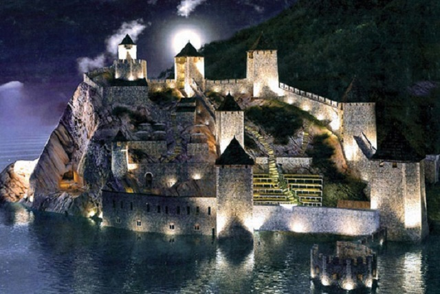
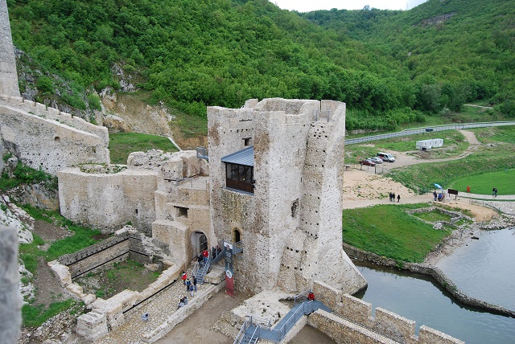
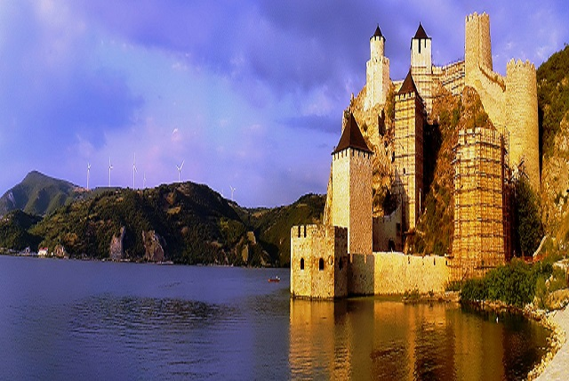

There are always dangers about. Therefore you must always keep your defences strong.
Signature Serbia

Legendary Fortress
On the walls of the magnificent Golubac fortress the “košava” wind breaks the waves of the Danube where the river is possibly most powerful, just before entering the largest gorge in Europe between the mighty Carpathian mountains.Like a sad, lonely Byzantine princess, like an eternal vigilant guard by whom no one can slip into the Djerdap gorge (eng. The Iron Gates of the Danube), the famous Golubac fortress has been defying centuries.

You'll find that this legendary fortress has been reconstructed during 5 years and now it looks better than ever!
2014-2019 reconstruction
The Government of the Republic of Serbia has applied to the reconstruction project fortress Blace with IPA funds of the
European Union in the framework of the international project "Cultural Route - Fortresses on the Danube". The funds were
provided through these funds in the amount of €6.5 million in 2011 and €2.1 million in 2016.Preliminary reconstruction project is work of architect Marina Jovin, professional consultants on the project were
Siniša Temerinski and archaeologist Dr Miomir Korać.

1. Reconstruction of the fortress, 2017
Reconstructed Golubac Fortress to open
The reconstruction and fitting out of the Golubac Fortress, a 14th century cultural and historical monument, kicked off
in September 2014. Apart from the reconstruction, the project included an extensive archaeological research, which led
to new discoveries that will complement the existing knowledge about the history of this medieval fort. The
reconstruction was overseen by the Republic Institute for the Protection of Cultural Monuments in Belgrade, while the
entire project was coordinated by the Austrian Development Agency.